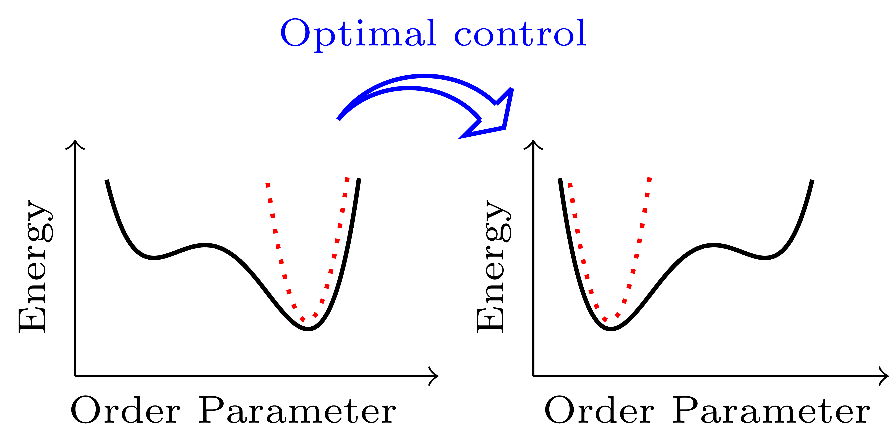

PhD Thesis - Optimal control in Stochastic thermodynamics for field theories
Optimizing the Energetics of the Finite-time Driving of Field Theories
The phase transitions for many-body systems have been understood using field theories. A few canonical physical model classes encapsulate the underlying physical properties of a large number of systems. The finite-time driving of such systems and associated optimal energetic costs have not been investigated. We consider two universality classes Model A and Model B, that describe the dynamics for the non-conserved and conserved scalar order parameters respectively. Here, using the recent developments in stochastic thermodynamics and optimal transport theory, we analytically compute the optimal driving protocols by minimizing the mean stochastic work required for a finite-time driving. Further, we numerically optimize the mean and variance of the stochastic work simultaneously. Such a multi-objective optimization is called a Pareto optimization problem and its optimal solution is a Pareto front. We discover a first-order Pareto phase transition in the Pareto front. Physically, it exhibits the coexistence of two classes of optimal driving protocols. Our framework sheds light on the finite-time optimal driving of the fields and the interplay between the mean and fluctuations of the work.
Non-ideal chemical reaction networks
The project aims to generalise the existing framework of the CRN to Non-ideal CRN.
Thermodynamics of Active Ising Model
The project aims to formulate a thermodynamically consistent Active Ising Model